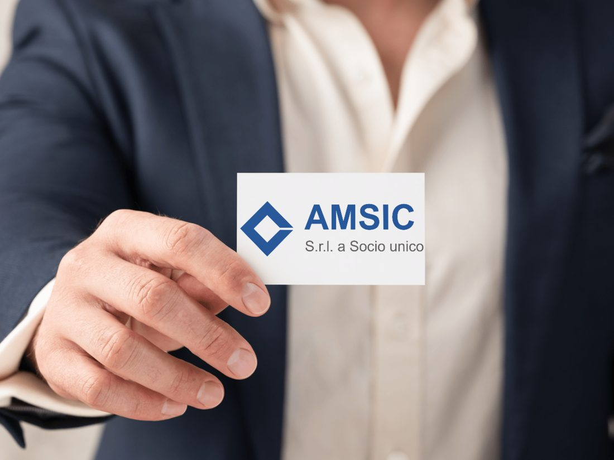
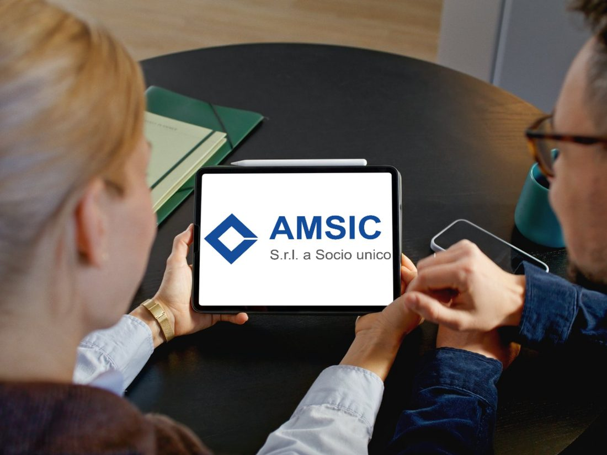

Chi siamo
Vent’anni di esperienza, un’organizzazione nuova.
AMSIC S.r.l. nasce da un team di professionisti con oltre vent’anni di esperienza nella gestione dei rifiuti speciali, pericolosi e non.

La nostra storia
Sebbene l’azienda sia di recente costituzione, il know-how accumulato in anni di attività sul campo ci consente di affrontare ogni sfida con competenza, tempestività e attenzione alle normative.
In seguito a una profonda riorganizzazione interna, AMSIC ha adottato un Modello Organizzativo 231 tra i più avanzati del settore, istituendo un Organismo di Vigilanza indipendente che supervisiona costantemente tutte le attività aziendali.
La nostra missione
Garantire un servizio sicuro, trasparente e conforme alle normative, offrendo ai nostri clienti soluzioni su misura per la raccolta, il trasporto, lo smaltimento e l’intermediazione dei rifiuti.
Ogni intervento è pensato per unire sicurezza operativa, rispetto dell’ambiente e piena conformità legislativa, per imprese pubbliche e private.
I nostri valori
I principi del nostro Codice Etico.
Valgono per chi lavora in AMSIC e per chiunque lavori con noi: clienti, fornitori, trasportatori e impianti partner.
Legalità
Rispetto tassativo di leggi, regolamenti, Modello 231 e Codice Etico in ogni attività.
Integrità e correttezza
Rapporti fondati su lealtà, onestà e collaborazione, contro ogni forma di corruzione.
Imparzialità
Decisioni prese con criteri oggettivi, evitando qualsiasi conflitto di interessi.
Trasparenza
Contabilità chiara e tracciabile, informazioni complete e verificabili.
Salute e sicurezza
Tutela delle persone che lavorano con noi e per noi, in ogni fase operativa.
Tutela ambientale
Ogni scelta orientata a ridurre l’impatto sull’ambiente e a favorire il recupero.
Come siamo organizzati
Una struttura snella, responsabilità chiare.
Amministratore Unico
Guida l’azienda e ha la responsabilità delle decisioni su tutte le operazioni.
Area Amministrativa e contabile
Gestisce dati dei clienti, intermediazioni concluse, ordini, fatturazione, archivio documentale e scadenze.
Area Commerciale
Cura i rapporti con produttori e detentori dei rifiuti, impianti di trattamento e trasportatori, per proporre le migliori soluzioni di recupero o smaltimento.

Contattaci per una consulenza personalizzata.
Raccontaci che rifiuto devi gestire, in che quantità e dove: ti indichiamo la soluzione più adatta e conforme alle normative.